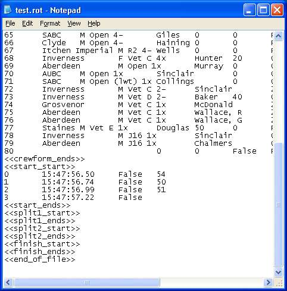

Manipulating the Saved Files
Rowing Timer Files have the extension *.ROT (which rhymes - very cool eh?)
They are a simple tab separated format. (See adjacent picture)
Sensible manipulation of these files (using a text editor such as "notepad") gives full freedom for error correction.